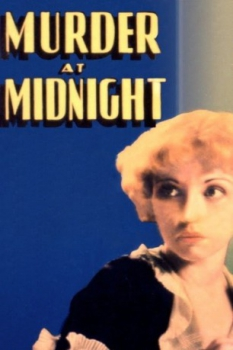
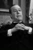

Country:United States, 69 minutes
Spoken languages:
Genres:Mystery
Director(s):Frank R. Strayer
Writer(s):Scott Darling
Video Codec:Unknown
Number: 1758


Certification:
Storyline:
Wealthy Mr. Kennedy shoots his secretary, Channing, during a parlor game, but it turns out the gun was loaded with real bullets. Luckily, criminologist Phillip Montrose is on hand to help the police. When Kennedy quickly ends up dead as well, the police think it's a tidy murder-suicide, but the family lawyer knows of a letter that voiced Kennedy's suspicions about someone who was out to get him. Soon, the cops are on the trail of a ruthless and clever killer who is one step ahead of even Montrose.
Cast: 
Medium: Original DVD,
Comments: Part of: Mystery Classics - 50 Movie Pack
Loaned: No
Aspect ratio: Unknown